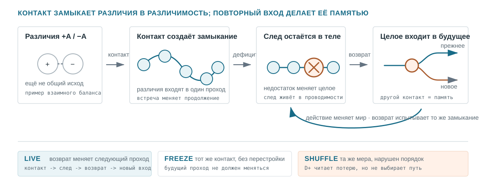

Публичный абстракт · базальное познание / материальная память
От различия к памяти в минимальном ненейронном носителе
Как контакт оставляет след в том же субстрате, который затем проводит восстановление
На шаг раньше готового объекта
Физика, биология и вычислительные науки обычно начинают с уже названных вещей — частиц, клеток, сетей, агентов, — а затем описывают отношения между ними. Здесь порядок осторожно разворачивается. Проект не объявляет, что всё есть различие, а начинает на шаг раньше законченного объекта: с альтернативных состояний носителя и контактов, через которые одна альтернатива способна изменить дальнейшее.
Различие не заменяет физику. Это ограничение против незаметной подмены процесса координатами, частицами, графами или результатами измерения. Работы Левина о базальной когнитивности подсказывают близкий ход между масштабами: сначала спросить, что система способна ощутить, удержать, добиваться и восстановить, и лишь затем решать, какой дисциплине принадлежит явление.
Контакт делает различие доступным
Различие может существовать, не проявляясь в одном контакте. Слепой зонд не устанавливает эквивалентность во всех продолжениях. И наоборот, измерение само физично: результат принадлежит совместной истории системы и прибора, а не взгляду извне. Это не решает проблему квантового измерения; оно лишь не позволяет принимать наблюдаемый рисунок за фотографию альтернатив до взаимодействия.
Операционально две сохранённые истории различимы, только если замена одной другой меняет допустимый последующий контакт. Формальная величина D+ читает наибольшую такую будущую разность. Она не является органом носителя: не выбирает маршрут, не создаёт память, не вычисляет геометрию и не сообщает субстрату, что делать.

Гипотеза носителя
Контакт должен изменить тот же субстрат, который затем проводит изменившееся продолжение.
- Совместимое замыкание возвращается в те же места и затем действует как целое.
- Новое открывает только реальный непройденный остаток.
- Действие должно изменить мир до заработанного возврата.
- Повторный вход меняет будущий контакт и переживает restart.
freeze / blocked / shuffleразрывают именно этот выигрыш.